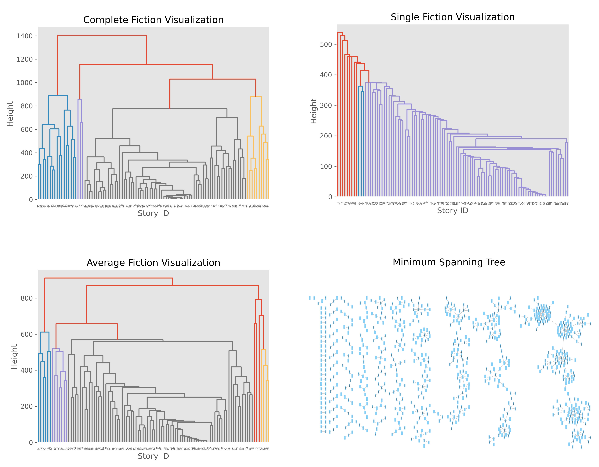

PROJECTS
Story Recommender
Story recommender based on unsupervised clustering of comment and like patterns created in python. This was a personal project to recommend stories that I would want to read.
What I did
The story recommender is built in python. Initially, I scraped user comment and like patterns off Fanfiction.net using Beautiful Soup. I then built a difference matrix between on the 800 scraped stories. I then used hierarchical clustering via SCIPY and a minimum spanning tree to create recommendations. The Hierarchical Clustering attempted Single, Average, and Complete linkages (see below for more).
What I Learned
1) Think through a solution before building it.
This project was built over the course of many years, with small tidbits added in every couple of months. If I were to do it again, I would think more at the beginning to avoid creating large chunks of code that would eventually be unused.
2) Build code that is easy to read and reuse.
Having come back to this project multiple times, it's been really difficult to reread some of the code I had created previously. I hope I can build better code in the the future that is easier to come back to after a break.
3) How to actually apply an ML model to a problem.
A lot of the ML I have learned was taught with a simple example on sample data to show its efficacy. Figuring out how to actually apply it to a real problem was both rewarding and interesting.
Link to RepositoryThe unsupervised clustering and minimum spanning tree
Here is the visualization of the unsupervised clustering and minimum spanning three. There are also pictures of the single, average, and complete linkages I used in the hierarchical clustering. The bottom right is a visualization of the minimum spanning tree. Note: Only 100 stories are shown in the clustering for clarity.
Demo Usage
Here are two examples of recommendations I received based on two stories I threw in. The first was a random story from the dataset, and the second was a well known story.
Story 1: A Marriage Most Convenient by AnneM.Oliver
In the first example, I inputted a random Harry Potter fanfiction called A Marriage Most Convenient by AnneM.Oliver. It was selected at random from among my dataset. In turn, I got out the following stories: Revenge is All The Sweeter by Twilight to Midnight, Simply Irresistible by bookworm1993, A Wonderful Caricature of Intimacy by Countess Abe, Draco and Hermione by Jiigglypuff
In particular, the last story is very aptly named for this set of stories. In every one, a relationship between Hermione and Draco is featured. While the mode for the development of their relationship may be different, they all feature the same romantic outcome. Here, I think the recommendation has a solid success. Despite their slight differences, all four are well related to the input and to each other.
Descriptions as well as links to stories are below.
Story 2: Harry Potter and the Boy Who Lived by The Santi
In the second example, I inputted a well known harry potter fanfiction called Harry Potter and the Boy Who Lived by The Santi. In turn, I got out out the following stories: Dark Lord Potter Part 1 by The Santi, On the Way to Greatness by Mira Mirth, Harry Potter and the Quantum Leap by Seel'vor, Manipulating Fate by Midnight Start 25.
In particular, these stories show that not all stories recommended for a single input will all be related. DLP Part 1 is similar to the original in large part due to similar authors. On the way to greatness has relation in terms of following the "different hosue trope," in which Harry is sorted into a different house. HP and the Quantum Leap shares a knack for "discovery" with HP and the Boy who lived. Both stories have harry "discover" major things that change the course of the story. Manipulating Fate is similar in this regard. Altogether, all four recommended stories are well related to HP and the Boy who Lived, but they are not necessarily extremely related themselves.
Here are some more descriptions of the various stories as well as links.
Author: AnneM.Oliver
Description: Hermione lost it all when she divorced. Draco would lose it all by age 30 if he didn't marry. Marriage to each other would be perfect, one would even say it was most convenient. Her daughter even looked like him, although, he wondered why that was.
Relationships: Hermione/Draco
LinkAuthor: Twilight to Midnight
Description: A marriage law has come to pass; an unfaithful boyfriend has been caught and an enemy has been chosen. Draco and Hermione discover the fine line between love and hate. Won 2nd place at the Dramione awards for best Draco and best action/adventure!
Relationships: Hermione/Draco
LinkAuthor: bookworm1993
Description: Draco gave a cocky grin. "I am going to give you a makeover." "I'm sorry what?" "You heard me Granger, I'm going to give you a makeover that will make every man want you,and make Weasley die of regret. You will be simply irresistible."
Relationships: Hermione/Draco
LinkAuthor: Countess of Abe
Description: Draco loves his son more than anything in the world. So, when his ex-wife plans to take his son away, Draco asks the most unlikely person for help. Hermione must decide whether changing her entire life is worth helping the man she hates unconditionally.
Relationships: Hermione/Draco
LinkAuthor: Jiigglypuff
Description: After Hermione is captured and taken to Malfoy Manor, she escapes with an imprisoned Draco despite their differences. They must work together to end the war, return to Hogwarts as eighth year students, unite the four Houses and become Professors - all while slowly falling in love in the process. DMHG.
Relationships: Hermione/Draco
LinkAuthor: The Santi
Description: Harry Potter loves, and is loved by, his parents, his godfather, and his brother. He isn’t mistreated, abused, or neglected. So why is he a Dark Wizard? NonBWL!Harry. Not your typical Harry’s brother is the Boy Who Lived story.
Relationships: N/A
LinkAuthor: The Santi
Description: Harry Potter has never known love or even kindness until he is rescued from his relatives by a pair of witches. How will the most talented wizard of his generation respond to those who have mistreated him? AU! Young!Tonks. Early chapters are being edited.
Relationships: Harry/Tonks
LinkAuthor: Mira Mirth
Description: As per the Hat's decision, Harry gets Sorted into Slytherin upon his arrival in Hogwarts—and suddenly, the future isn't what it used to be.
Relationships: N/A
LinkAuthor: Seel'vor
Description: Harry Potter won the Second Blood War and defeated his enemies... and was left with nothing. Decades later, he contributes to the creation of a revolutionary new piece of technology and destroys the future in order to rewrite his own past...
Relationships: Harry/Hermione
LinkAuthor: Midnight Star 25
Description: Time Travel A 30 year old Harry succeeded in fulfilling the prophecy, but there's nothing left to live for. Harry executes a risky scheme, that will have him fighting against fate itself. GreyHarry Independent Powerful Harry Slight Dumbledore Bashing
Relationships: N/A
LinkTakeaways
At the end of the day, this project was a labor to try and create a recommendation system so I could find new stories. To that end, it does that, and I am happy some recommendation does occur. However, it does have a few flaws.
First, the decision to use only 800 stories is less than ideal. Given that there are nearly a million fanfiction stories on fanfiction.net, a very large portion of stories are left out.
Second, as might be surmised with nearly 1 million stories, many stories are pretty bad. Some are certainly extremely good, but similar like and comment patterns does not necessarily result in "high quality" pieces of writing being recommended. Instead, as we note in the examples, the recommender is more likely to find stories that are more similar in topic, as opposed to being more similar in writing quality.
Thus, while this project does find similar stories to some degree, it does not necessarily guarantee that you will find stories that you might enjoy.
Simple Attendance Tracker
A simple attendance tracker built for a high school robotics team based on SQL, Python, Flask, HTML, and CSS. This was my CS50 (Introduction to Computer Science at Harvard University) final project.
AP CS A and AP CS Principles Auto Grader
An auto-grader using the Mimir platform to give instantaneous feedback to high school students when submitting AP CS A and Principles PSETS